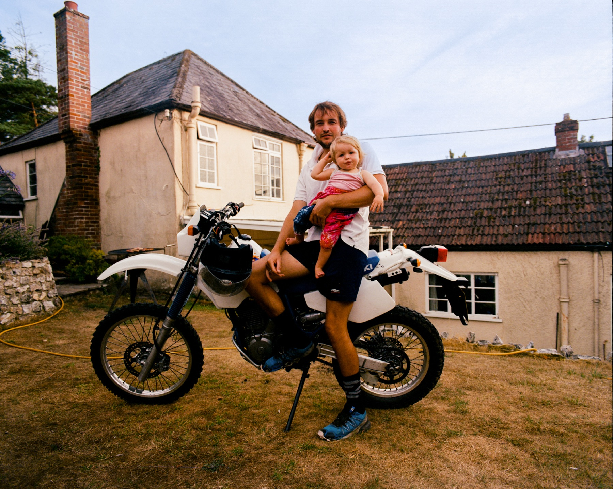
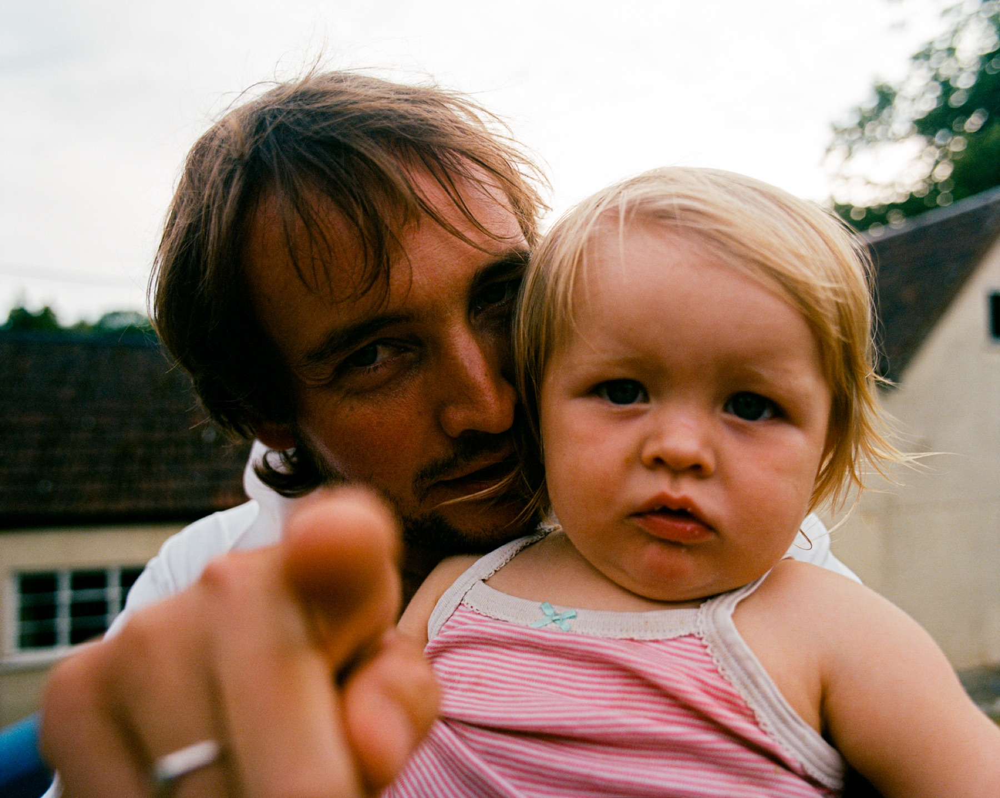
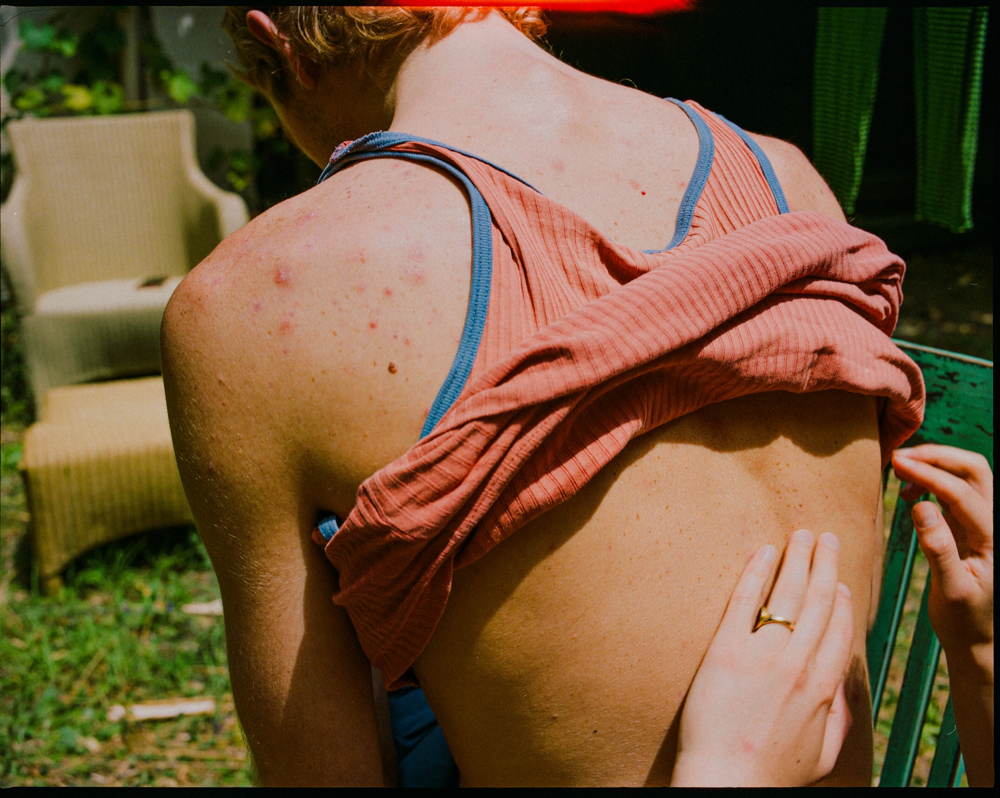
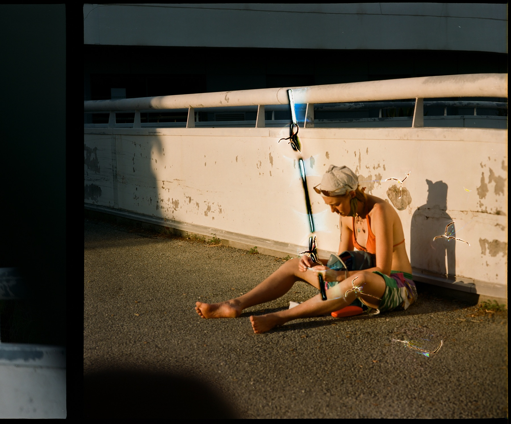

Tomas
Fdz.
Vertiz
Director · Photographer
Film
Commercial
Photography
CV
Info
ES
/
EN
◐
Otras Fotos
2017 - Current
Personal series
4 photographs

01 / 04

02 / 04

03 / 04

04 / 04
← Photography
Top ↑